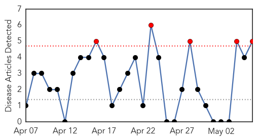
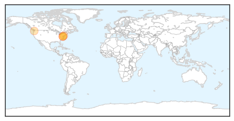
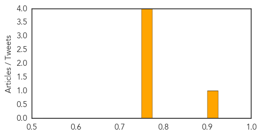
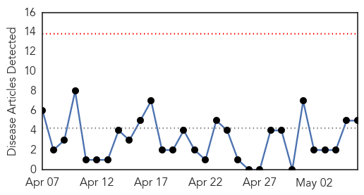
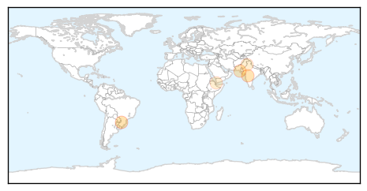
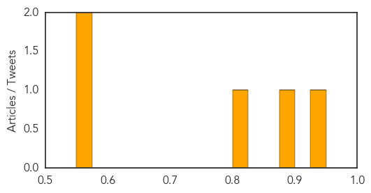

Pertussis
30-Day Web Trend
5 alerts, 0 warnings

30-Day Twitter Trend
0 alerts, 0 warnings

Article Locations
Article Confidences
Top Articles:
- 0.900
- Jefferson County whooping cough cases climb to 20 -- Port Angeles Port Townsend Sequim Forks Jefferson County Clallam County Olympic Peninsula Daily NEWS
- 0.775
- Rite Aid : Whooping Cough Vaccine Readily Available in 139 Washington State Rite Aid Pharmacies
- 0.771
- Study finds whooping cough vaccine provides little long-term protection
- 0.758
- Whooping cough study shows vaccine protection fades over time
- 0.751
- Whooping cough vaccine loses strength over time
Top Tweets:
-
No tweets found for May 06, 2015
Dengue Fever
30-Day Web Trend
0 alerts, 0 warnings

30-Day Twitter Trend
2 alerts, 0 warnings

Article Locations
Article Confidences
Top Articles:
Top Tweets:
-
No tweets found for May 06, 2015